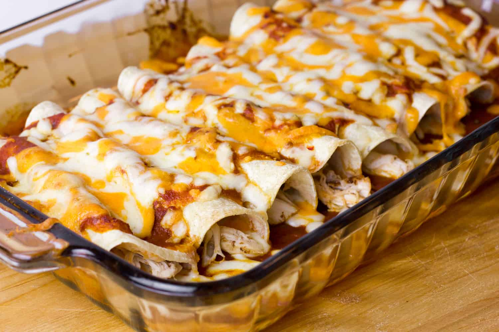

Chicken Enchiladas

Ingredients
- 2 whole chicken breasts, uncooked
- 2 cups chicken broth
- 1 Teaspoon garlic powder
- one 10 ounce can diced tomatoes
- 1 medium onion , diced
- 12 corn tortillas
- 2 cups grated Cheddar cheese
- 2 cups grated Monterey Jack cheese
Homemade Red Enchilada Sauce
- 2 Tablespoons vegetable oil
- 2 Tablespoons flour
- 4 Tablespoons chili powder
- 1/2 Teaspoon garlic powder
- 1/2 Teaspoon salt
- 1/2 Teaspoon cumin
- 1/4 Teaspoon onion powder
- 1/4 Teaspoon cayene pepper
- 2 cups chicken broth
Directions
- Preheat oven to 400 degrees.
- Place the diced onion,tomatoes,garlic powder, chicken broth and the whole chicken breasts in a large saucepan.
- Simmer for 30 minutes until the chicken breasts are tender enough to easily shred.
- Let the mixture cool.
- Remove the chicken breasts and shred, discard the remaining ingredients in the pot.
- Spread 1/2 cup of enchilada sauce onto the bottom of a 13x9 inch baking pan.
- Spread about a 1/2 Teaspoon enchilada sauce onto the middle of each of 12 corn tortillas.
- Place 1 Tablespoon of shredded chicken on top of the enchilada sauce followed by a sprinkling of both cheeses.
- Roll the corn tortilla up and place in the 13x9 inch baking pan. Repeat for the remaining 11 tortillas.
-
- Top the rolled enchiladas with the remaining enchilada sauce and both shredded cheeses.
- Bake at 400 degrees, uncovered for about 20 minutes or until bubbly.
Homemade Red Enchilada Sauce directions:
- Place the flour and oil in a medium size saucepan under medium heat.
- Whisk and cook the mixture until it starts to boil, then boil another minute or two to remove the flour taste.
- Whisk in the seasonings until well blended.
- While still whisking, add the chicken broth to the pan, reduce the heat to low and simmer for about 10 minutes or until slightly thickened.
Website
Contact me
Email me
The University of Montana
32 Campus Dr
Missoula, MT 59812